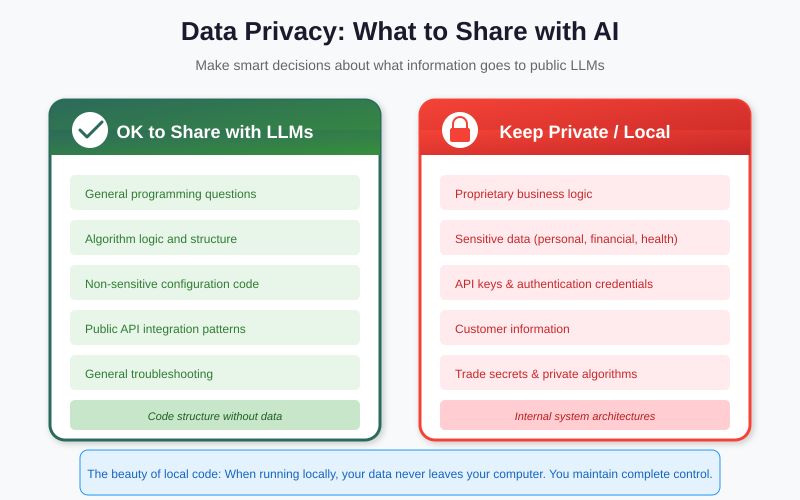
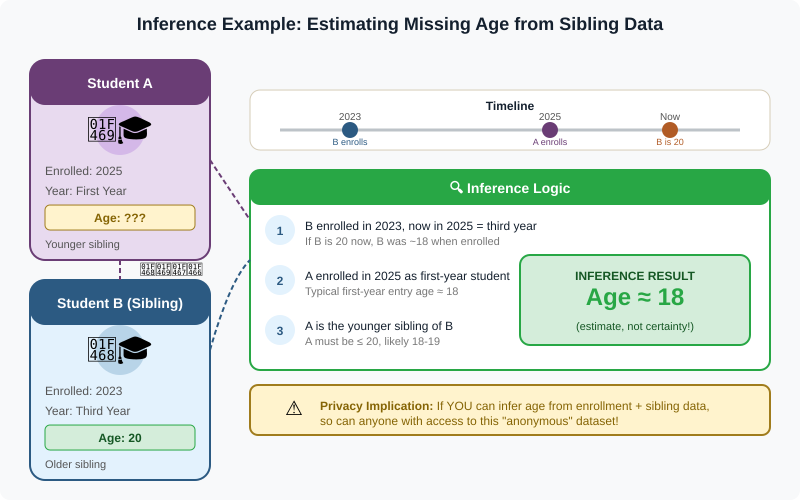

What we'll cover
- Framing — capability is not permission; the four lines this session draws
- Admissibility — the test, reliability factors, and when evidence gets excluded
- Chain-of-custody mechanics — hashing, write-blockers, contemporaneous notes (Activity 1)
- Privacy obligations & opsec — data-protection principles and a cloud-AI threat model
- De-identification — Safe Harbor's 18 categories, quasi-identifiers, bits (Activity 2)
- De-anonymization — the Sweeney linkage attack step by step, the case studies (Activity 3)
- Defences & recap — k-anonymity to differential privacy; bridge to Part 4
When evidence is admissible
Admissibility is whether a court will accept your evidence at all. The capability to extract data and the right to rely on it are different questions, and the second is the one that decides a case. You can pull a perfect, complete image of a phone and still watch the whole thing thrown out because of how you got there. Broadly, digital evidence is admissible when it is:
Admissible when…
It was obtained lawfully (proper authority/warrant); its integrity is provable (hashes, write-blockers); the chain of custody is unbroken and documented; the method is reliable and reproducible; and the analyst is competent to explain it.
Rejected when…
It was obtained unlawfully or beyond the scope of the warrant; it was altered or its integrity cannot be shown; custody has gaps; the technique is a black box nobody can explain; or it cannot be reproduced.
Read the two columns as mirror images. Almost every reason evidence is rejected is the absence of something on the left. That is good news for you as a practitioner: admissibility is mostly a set of habits you can build into your workflow before any dispute arises, rather than an argument you win in the courtroom afterwards.
This constrains your AI choices directly. A model that cannot explain why it flagged a file, or that required uploading the evidence to an opaque third-party service, may produce a result you cannot defend. Explainability and custody are not nice-to-haves — they are admissibility requirements. This is a major reason Part 4 favours in-house, inspectable tools.
Discuss
Suppose an AI triage tool is 99% accurate at flagging illicit images but its vendor will not explain how it scores them, and the only way to run it is to upload your evidence to the vendor's cloud. Is the output admissible? Would you use it at all? Notice the accuracy number is almost beside the point — the problem is the two things you cannot show a court.
Reliability factors & exclusion
"Reliable and reproducible" sounds vague, so courts have given it structure. The most widely cited framing comes from the U.S. Daubert standard, but the underlying questions are common sense and travel well across jurisdictions. When a method's reliability is challenged, ask whether it has been:
- Tested. Has the technique actually been tried against known answers, or is it asserted to work? A tool with a documented validation suite beats one with a confident sales brochure.
- Peer-reviewed and published. Has the method been exposed to outside scrutiny by people with no stake in selling it?
- Characterised by a known error rate. Does the method come with measured rates of false positives and false negatives? "We don't know how often it's wrong" is itself a finding.
- Generally accepted. Do practitioners in the relevant field actually use and trust it, or is it a one-off?
Notice how badly an opaque, proprietary AI model scores against these four factors: its error rate may be undisclosed, its internals unpublished, and its acceptance asserted rather than earned. The same four questions are exactly why Part 4's transparent tools have a courtroom advantage that has nothing to do with raw accuracy.
Evidence gets excluded for ordinary, avoidable reasons. A search runs beyond the scope of the warrant — the warrant covered financial records, the analyst also pulled the family photos — and the extra material is suppressed. Or the working copy's hash does not match the original taken at seizure, so the integrity of the whole exhibit collapses. Or there is a three-day gap in the custody log where nobody can say where the drive was, and the defence has its reasonable doubt. None of these is exotic; each is a missing habit.
Chain-of-custody mechanics
Chain of custody is the documented answer to one question a court will always ask: can you prove this exhibit is the same data you seized, unaltered, and that you can account for it at every moment in between? Three mechanisms do almost all of the work, and they are concrete enough to inspect.
Cryptographic hashing — proving integrity
A cryptographic hash such as SHA-256 reduces any amount of data to a fixed 256-bit fingerprint. Change a single bit anywhere in the image — flip one pixel, touch one timestamp — and the hash changes completely and unpredictably. The workflow is simple and devastatingly effective: hash the evidence at seizure, hash every working copy, and hash again before presentation. If the values match, the data is provably identical; if they differ, you have caught the alteration rather than missed it. The hash is the mathematical spine of the whole "integrity is provable" requirement from the admissibility test.
Write-blockers — preventing alteration
A write-blocker sits between your analysis machine and the original media and physically (or in software) permits reads while denying writes. The reason matters: merely plugging in a drive can let an operating system update access timestamps or replay a journal, silently altering the original before you have even opened a file. A write-blocker guarantees the source stays read-only, so the hash you take afterwards still matches the one taken at seizure. You acquire from the blocked original and then do all your work on copies.
Contemporaneous documentation — accounting for time
The third mechanism is the least technical and the most often fumbled: write it down as it happens. A contemporaneous custody log records who handled the exhibit, when, why, and what they did, with the hash recorded at each transfer. "Contemporaneous" is the load-bearing word — notes reconstructed from memory weeks later carry far less weight, and a single unexplained gap is enough for a defence to argue the evidence could have been tampered with.
Activity 1 — Break the hash (in pairs)
On any machine, compute the SHA-256 of a short text file (for example sha256sum
evidence.txt, or the equivalent in your OS). Record the value. Now change one
character in the file, save, and hash it again. Compare the two fingerprints.
- How many characters of the hash changed? (You'll find it's not "one for one"—the whole value scrambles.)
- If you only had the second hash, could you tell what was changed? Why is that one-way property exactly what custody needs?
- Where in your own workflow would you record this value so it is genuinely contemporaneous?
Discuss
A colleague says, "I didn't use a write-blocker, but I hashed the drive right after I plugged it in, so the hash proves integrity." What is wrong with this reasoning? (Hint: what does the hash actually certify, and when did the first opportunity to alter the data occur?)
Tracing tools that respect privacy
Suppose you build a tool that traces an actor across systems — correlating logins, IP addresses, device fingerprints. The moment it touches services run by other parties, you are bound by the privacy policies and terms you agreed to with those providers, and by the law that protects the people in the data. Building the tool does not exempt you from the rules; it makes you responsible for them.
Underneath the specific rules sit a handful of data-protection principles that recur in almost every modern regime (GDPR is the best-known articulation, but the ideas are widely shared). They are worth memorising because they tell you, before you write a line of code, what a defensible tracing tool must do:
- Lawful basis. You need a specific, recorded reason you are allowed to process each piece of data — a warrant, a contract, consent, or a legitimate interest. "It was available" is not a lawful basis.
- Purpose limitation. Data collected for one purpose may not be quietly repurposed for another. Evidence gathered to investigate fraud is not yours to mine for unrelated leads.
- Data minimisation. Collect the narrowest set of data that answers the question, and no more. Every extra field is extra liability and extra re-identification risk.
- Retention limits. Keep the data only as long as the purpose requires, then dispose of it. Indefinite retention is both a legal failure and a breach waiting to happen.
These map almost one-to-one onto the practical habits a tracing tool needs:
- Stay within authorised scope. Collect only what your warrant, contract, or the subject's consent actually covers. Capability is not permission.
- Honour the providers' terms. Scraping or correlating data in ways a platform's policy forbids can taint the evidence and expose you to liability.
- Minimise by design. Collect the narrowest data that answers the question, retain it for the shortest time, and segregate anything about uninvolved third parties.
- Log lawful basis. For each data source the tool touches, record the authority that permits it — the same discipline as chain of custody, applied to privacy.
Securing your own footprint
Here is the uncomfortable symmetry: while you investigate, the tools you use are investigating you. A cloud AI service that processes your evidence sees that evidence; a "free" analysis app monetises telemetry; an extension reads what it touches. When the material is evidence-grade, leaking it is both a security breach and a custody failure.
Imagine pasting a victim's chat export into a public chatbot to "summarise it". That export has now left your custody, been transmitted across a border, and possibly been retained for model training. You may have breached the victim's privacy, the provider's terms, and the admissibility of the evidence — in one paste.
The defensible mindset is a short threat model you apply before any evidence touches any external service. The default assumption is adversarial, and it is liberating once you accept it:
- Assume every external service is a collector. Treat any cloud AI, API, or "free" app as a party that retains, inspects, and may train on whatever you send it — until you have read and verified otherwise in writing. Read what it retains, where, and for how long, before any evidence touches it.
- Keep evidence local. Prefer tools that run on infrastructure you control, so the evidence never crosses a boundary you cannot account for — the through-line to Part 4.
- Encrypt at rest and in transit. Full-disk or volume encryption on your working copies, TLS for anything that does move, and the keys held by you — not by the service.
- Control access and audit it. Least-privilege accounts, and an audit log of who opened the working copies, so your own custody story is as tight as the evidence's.

Discuss
Walk through one cloud AI tool you (or your organisation) actually use. For evidence-grade data: where would the data physically go, who could read it, how long is it kept, and could you prove any of that to a court? If you cannot answer all four from documentation, the tool fails the threat model — what would you do instead?
De-identification & quasi-identifiers
De-identification is removing the information that links data to a person. The naïve version — delete the name and ID — fails, because identity hides in combinations of "harmless" fields. A standard like HIPAA Safe Harbor codifies this by requiring removal of 18 categories of identifiers, not just names: dates (birth, admission, discharge), ZIP codes, phone and fax numbers, email addresses, device identifiers, IP addresses, biometric data, full-face photos, and more. The point of the list is precisely that "remove the name" is nowhere near enough — identity leaks through dozens of fields nobody thinks of as a name.
The fields that are not obviously identifying but become so in combination are quasi-identifiers: attributes like ZIP code, date of birth, sex, job title, or admission date that are not unique on their own but narrow the population sharply when combined. Latanya Sweeney's finding is the canonical warning:
87% of the U.S. population can be uniquely identified by just three fields: ZIP code + date of birth + sex. None of those is a "name", yet together they are a fingerprint. "Quasi-identifiers that seem harmless in isolation become identifying when combined."

There is a precise way to talk about "how identifying" a field is: bits of identifying information, in the sense of Shannon entropy. Each bit roughly halves the population still consistent with the data. Splitting the world by sex gives about 1 bit; a five-digit ZIP code can give many bits; a full date of birth gives more still. Stack enough bits and you cross the threshold where only one person remains. That is exactly why three "harmless" quasi-identifiers can re-identify most of a country — together they simply carry enough bits.
Activity 2 — Count the bits
Open the Shannon entropy demo and run it on a few fields one at a time: sex, then ZIP code, then full date of birth, then a combination of all three.
- Record the bits of identifying information each field contributes on its own.
- Do the bits roughly add up when you combine fields? At what total does the population shrink to a single person?
- Find a field you assumed was "anonymous" that turns out to carry surprisingly many bits. That intuition gap is the whole lesson.
De-anonymization: the linkage attack
De-anonymization (re-identification) reverses de-identification by linking an "anonymous" dataset to an external one they share quasi-identifiers with. Sweeney famously re-identified a state governor's medical record by linking an "anonymous" hospital discharge set to public voter rolls on ZIP + birth date + sex. This is not a theoretical risk; it is a repeatable method, and it is how investigators (and adversaries) go beyond the data that was formally collected.
It is worth walking the Sweeney linkage attack step by step, because once you see the shape you will recognise it everywhere:
- Start with the "anonymous" set. A state agency releases hospital discharge records with names and explicit IDs stripped — but each record still carries the patient's ZIP code, date of birth, sex, and diagnosis. It was considered safe to publish.
- Obtain a public set that overlaps. Voter registration rolls are public and, for a small fee, purchasable. They contain each voter's name and address alongside their ZIP code, date of birth, and sex — the very same quasi-identifiers.
- Join on the shared quasi-identifiers. Match the two tables where ZIP + date of birth + sex agree. Because that triple is nearly unique (the 87% result), most rows match exactly one voter.
- Read off the identity. The voter roll supplies the name; the discharge record supplied the diagnosis. The "anonymous" medical record now has a name attached — including the governor's, whose record Sweeney mailed to his own office to prove the point.
In database terms it is a single join: anonymous medical set ⋈ public voter roll on (ZIP, DOB, sex). Nothing was hacked. Two lawfully obtained datasets, linked on fields nobody thought were identifying, dissolved the anonymity of both. The same pattern recurs across the most famous re-identification cases:

| Case | Year | Data | Attack | Result |
|---|---|---|---|---|
| Netflix Prize | 2006 | Movie ratings (IDs replaced) | Cross-reference with public IMDb reviews | 99% identified from 8 ratings |
| AOL search leak | 2006 | "Anonymised" search logs | Read the queries themselves | Users named from their own searches |
| Sweeney / GIC | 1997 | Hospital discharge records | Link to voter rolls (ZIP+DOB+sex) | Governor's record re-identified; 87% of US at risk |
| Location traces | 2013 | Mobile GPS points | Pattern analysis of movement | 95% unique from just 4 points |
| Cambridge Analytica | 2018 | Social-graph profiles | Inference from "likes" + linkage | ~87M profiles exploited |
One sentence each, so the pattern is unmistakable:
- Netflix Prize (2006) — researchers matched the "anonymous" rating timestamps and scores to public IMDb reviews and re-identified individual subscribers, 99% from as few as 8 ratings.
- AOL search leak (2006) — the "anonymised" logs replaced names with numbers, but people's own searches (their address, their family, their ailments) named them outright.
- Sweeney / GIC (1997) — the linkage attack above re-identified the governor's discharge record and showed 87% of the U.S. population was exposed by ZIP + DOB + sex.
- Location traces (2013) — human movement is so distinctive that just four approximate time-and-place points made 95% of people uniquely identifiable in a mobility dataset.
- Cambridge Analytica (2018) — profiles built from Facebook "likes" were linked and inferred against to exploit roughly 87 million people's data for political targeting.
Activity 3 — Run the attack
Open the linkage-attack demo, which animates the exact Sweeney attack — an "anonymous" medical table matched against a public voter list on the three quasi-identifiers.
- Step through the join and record which patients get re-identified and which survive. Why do some rows resist?
- What is the smallest set of quasi-identifiers that still cracks most of the table?
- Then open the family-inference demo: how does deducing a never-recorded fact differ from linkage, and why is it harder to defend against?

Discuss
Every case above used data that was lawfully obtained and "anonymised" in good faith. If no rule was broken to collect it, where exactly does the wrong occur — at release, at linkage, or at use? And how does that shape what you may do with a re-identification you could perform?
Defences that actually work
Because deleting names is not enough, real protection works on the quasi-identifiers and on the output of any analysis. The standard ladder, each with a one-line example:
- k-anonymity — generalise/suppress fields so every record is indistinguishable from at least k−1 others. Example: replace exact birth dates with birth years and ZIPs with their first three digits until at least 5 people share every combination (k=5). (Finding the optimal generalisation is NP-hard — a recurring theme: privacy and computation are entangled.)
- l-diversity — strengthen k-anonymity so each indistinguishable group also contains at least l different sensitive values. Example: if all 5 people in a group share the diagnosis "HIV+", k-anonymity hid who but not what — l-diversity forces the group to hold varied diagnoses.
- t-closeness — go further so each group's distribution of sensitive values is close (within t) to the distribution in the whole dataset. Example: a group that is 80% cancer when the population is 5% cancer still leaks — t-closeness rules that out.
- Differential privacy — add calibrated noise so that any one person's presence barely changes the result, with a measurable privacy budget (ε) you spend down with each query. Example: answer "how many patients have diabetes?" with the true count plus a little random noise, so adding or removing one patient can't be detected from the answer.
Activity 4 — Spend the budget
Open the privacy-budget tracker and ask the dataset a series of questions, watching the differential-privacy budget (ε) deplete with each one.
- How many queries can you ask before the remaining budget forces you to stop?
- What happens to the noise (and your confidence in answers) as the budget runs low?
- Connect it back: why is "just keep querying the anonymous dataset" a guaranteed path to re-identification, and how does a finite ε formally prevent it?
Discuss
Each rung of the ladder costs something — generalising fields, adding noise — in the accuracy or usefulness of the data. For a forensic dataset you must share with co-investigators or disclose to a defence team, how far up the ladder is "enough"? Who decides, and against what standard?
Recap & further practice
- Admissibility — lawful acquisition, provable integrity, unbroken custody, reproducible method — decides whether evidence counts, and constrains which AI you may use; reliability turns on whether a method is tested, peer-reviewed, error-rated, and accepted.
- Chain of custody runs on three mechanics: SHA-256 hashing to prove integrity, write-blockers to prevent alteration, and contemporaneous documentation to account for time.
- Building a tracing tool does not exempt you from the privacy principles and law — lawful basis, purpose limitation, data minimisation, retention limits — governing the data it touches.
- Every external service is a data collector: assume it collects, keep evidence local, encrypt at rest and in transit.
- Identity hides in quasi-identifiers (Safe Harbor strips 18 categories, not just names): ZIP+DOB+sex re-identifies 87% of people, measurable in bits.
- De-anonymization by linkage is a repeatable join; defend with k-anonymity, l-diversity, t-closeness, and differential privacy — and remember optimal k-anonymity is NP-hard.
Further practice before Part 4: take one dataset you could plausibly handle in your own work and list its quasi-identifiers, estimate (even roughly) how many bits of identifying information they carry together, and decide which rung of the defences ladder you would apply before sharing it. Part 4 then builds the in-house, inspectable tools that let you do all of this without ever surrendering custody.